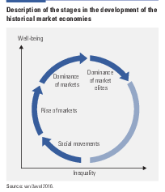

28 Markets
Markets are always imperfect and incomplete and can thus never be characterised as Pareto-optimal. They are always in a situation where a government (a central planner) is able to improve a market outcome.
The market economy has not always existed – indeed it has been around for only about 250 years. Before that there were feudal economies where peasants or serfs worked the land for their masters who consumed the produce. That system was around for over 1000 years. Before that there were slave economies where people captured in wars were forced to work for their slave owners – that system was around for thousands of years.
28.1 Market Failure
Reinert
‘Market failure’ is a term oft en used when actual developments fail to behave the way economic theory would predict. Cimoli, Dosi and Stiglitz (2009) acknowledge that ‘market failure’ is not a useful way to approach the problem of poverty. In fact, from a Schumpeterian angle, what we gener- ally refer to as ‘development’ is, in fact, a ‘market failure’ compared to the standard neoclassical model assuming perfect competition and diminishing returns. What all developed countries have in common is a large increasing returns sector that has created huge barriers to entry, imperfect competition, and a ‘rent’ that has been divided among capitalists (high profi ts), labour (high wages) and the government sector (larger tax base).
The shock therapies of the Washington institutions—instant free trade and ‘structural adjustments’—sent poor countries, whose industrial sectors were not yet competitive on the world market, ‘from Boston to St. Louis’ in Carey’s scheme.
28.2 The Rise and Fall of Market Societies
van Bavel
Markets emerge in an equitable setting and grow by creation of institutions that secure easy access to broad groups. The opportunities of market exchange push up economic growth and well-being as long as the fruits of growth are fairly evenly distributed. As markets become dominant - especially the markets for land, labour and capital - inequality grows in a slow process as ownership of land and capital concentrates.
As inequality grow, economic growth initially continues, but to a lesser degree get translated into broad well-being. Purchasing power stagnates for large parts of the population. Shrinking demand and declining profitability shift investments to financial markets away from productive sectors.
Wealth is instead used to acquire political leverage through patronage and buying political positions. or by Through their dominance in financial markets and their role as creditors of the state the wealthy acquire key positions in the fiscal regime, bureaucracy and finance.

Over time markets become less open and equitable, through both large wealth owners’ economic weight and their ability to skew the institutional organization. Productive investments declines and the economy stagnates. Economic inequality rises further, feeding into growing political inequity and social unrest, resulting in coercion, rebellion and breakdown.
After breakdown the process starts to build up anew from a position of more equal distribution of wealth and power.
Market economies were thus not the base of freedom and equity, as some theories would have it, but rather developed on the basis of earlier-won freedom and equity. The market subsequently replaced the associations and organizations of ordinary people as the allocation system, a process that sped up when market elites and state elites came to overlap and jointly, and often deliberately, marginal- ized these organizations. This reduced ordinary people’s opportunities to defend freedom, their access to decisionmaking power and their grip over land and resources. The allocation systems that prevailed before the rise of the market, whether the commons or other associations, had mostly included long- term security and environmental sustainability in their functioning, as ensured by their rules. But the market does not do so explicitly. 7 And in these other systems, cause and effect, and actor and affected person, were more closely linked, because of their smaller scale. In mar- kets they are less so. This poses a risk, since in a market economy, owners of land, capital and natural resources are often far detached from those affected by damage from exploiting resources. They also face fewer constraints on exploitation than systems with more divided property rights.
28.3 The Market Institution
Markets as one of the fundamental institutions of capitalism function precisely because fragmented actors come together to compete. However, these decentralized encounters are based on a (financial) infrastructure that must be as frictionless as possible, i.e. centralized.
In received theory, the market is a flat institution, comprising numerous buyers and sellers whose actions are independent of each other and whose size is too small to individually alter the overall outcome. In the actual world, however, the market is anything but flat.
What should the Biden administration have done to overwhelm supply chain bottlenecks early on in the crunch? What should the administration be doing now? I think many of us imagined that we live in a world where there’s a wizard behind the box. That there’s actually somebody in charge of all of this, and that that somebody must have made a mistake. And of course, it must be the president of the United States. But that’s not actually the world that we live in. It’s a market-based system. We’re lucky to live in an economy that’s built on the principles of free enterprise, and so while it’s easy to cast blame and point fingers at the administration, we have to recognize that they’re not really in charge of all of these things. They didn’t create this situation and I’m not 100% convinced that they’re the ones that are going to be best equipped to solve the problem… As much as we love the idea of a free enterprise system, the reality is that markets often fail…if you’re trying to address a market failure, you want to have a single person or team in charge that can dictate terms to all the different market actors.
Markets: mechanisms for eliciting preferences and equating marginal rates of substitution among diverse agents with local information about production and consumption opportunities (Hayek) Roth (2019) How Market Design Emerged from Game Theory
28.4 Market Primacy
Austin
Today’s market primacy may be detrimental. With markets privileged – and non-market institutions discredited – government has been unable to correct the market’s omission of so many recognized externalities, let alone advance non-market regulations or prohibitions to protect our ecology.
We conceived of Homo Economicus and built a logical model of the world around that conception and have ever since been trying to live up – live down, really – to that self-image. We have been striving to make our behaviour fit a simple model rather than adjusting our models to a new comprehension of our complex behaviour. Effectively, a subplot of our broader mind-culture co-evolution has been a ‘mind-market coevolution’, in which human minds have made markets have shaped minds.
Central to that model – and to our current faith in markets – is the left-brain inspired idea that society can be reduced to rational individual ‘agents’ endowed with entirely independent preferences who exchange parts of the world in a market system that has the magical power to ‘add everything back up’ to arrive at the best of all possible worlds. It is a seductive vision – magically self-coherent and entirely insulated from any external limitations. It sounds exactly like the sort of place that the reductionist left brain would wish to inhabit.
Two centuries after Carlyle, people formerly members of communities have become ‘human capital’ summable into ‘social capital’ wholes.
To allow the market mechanism to be sole director of the fate of human beings and their natural environment… would result in the demolition of society. (Karl Polanyi)
Where Einstein said you cannot solve problems with the same sort of thinking that created them, what McGilchrist effectively says is that you cannot solve problems with the same brain hemisphere that created them. What I suggest from a lowlier perch, and what Kumar invited his LSE hosts to consider, is that we are unlikely to solve problems that have arisen from economic primacy with thinking that upholds economic primacy.
Our market-centric culture has granted primacy to the economist, not the ecologist, which may be the wrong way around. Of course, we do have to ‘manage our house’ (economics), but we must also be mindful of the state of Nature’s house (ecology) and of how the management of our house at the local level affects Nature’s house at the global level.
Market advocates have sometimes likened the market to an ‘intelligence’. But if it is intelligent, it is very much intelligent in the way the left brain is intelligent: with a limited view of the world – a ‘part world’ – that it nonetheless believes is whole. McGilchrist has remarked: ‘the left brain doesn’t know what the left brain doesn’t know.’ By the same token, the market doesn’t know what the market doesn’t know, but we have told ourselves it is all-knowing: ‘markets are the solution, government is the problem’.
Our challenge is not to build a sustainable economy but to develop a sustainable culture that has an economy.
If a left-brained culture has enabled – and been reinforced by – the ascendancy of the private-enabling market over non-market institutions within human self-organization, then we might attain a more sustainable culture by revitalizing the institutions left behind by that ascent. Indeed, before the ‘neoliberalism’ that has been ascendant for the duration of the ‘Great Acceleration’, there was an ’embedded liberalism’ in which market and non-market institutions were more finely balanced.
Critically, the potential benefit of such a rebalancing is to reinvigorate those institutions that can complement the markets by standing up to them! The real value of government is its potential not to amplify market forces but to modulate them.
The market is not only self-regulating, but also susceptible to positive reinforcement loops that can become runaway problems.
Austin (2021) The Matrix of the Emissary - Market Primacy and The Sustainability Crisis
28.5 Markets as Entropy Maximisers
Markets are randomising machines, they maximise entropy, and this fact alone is sufficient to explain some of the inequality we observe.
Market transactions involve a transfer of monetary value. After any transaction one party may have more or less money than before.
It’s quite easy to write a short simulation program that takes a large collection of individuals that start with equal amounts of money. We then pick two individuals at random. One is the buyer. We randomly choose a proportion of their money to spend. The seller gets that money. We then repeat, and pick another two individuals at random. And we keep doing this forever.
After a short period, we can then measure the distribution of money across individuals. And we find, once again, the exponential distribution. Most individuals have very little money, and a small number have a great deal.
So the activity of market exchange is acting just like the cocktail shaker: its mixing everything up, randomising things, and maximising the entropy of the system.
You might think that this model of money exchange is far too simple to tell us anything about real markets. But you’d be wrong.
Remarkably, we observe the exponential distribution in actual economies. The exponential is a great fit to the bottom 80% of the wealth distribution, which is the vast majority of the population. And this holds true for whichever capitalist country we look at.
The fact that 80% of the wealth distribution of actual economies follows an exponential law is a very astonishing regularity.
We might think that differences in wealth must arise from accidents of birth or personal virtue. But the principle of entropy maximisation tells us there’s a much more important causal factor at work. We quickly get extreme income inequality even in an economy with identical individuals with identical initial endowments of money.
The points is that markets are randomising machines, they maximise entropy, and this fact alone is sufficient to explain some of the inequality we observe.
So the anarchy of the market is the primary and essential cause of economic inequality.
But why doesn’t the exponential law fit the entire wealth distribution? What about the remaining 20% of rich people?
28.6 Competition Bargaining
Tankus
The central question this paper tackles are: what institutional mechanisms coordinate between different market actors to produce market prices and how does law, particularly competition law, shape these institutional mechanisms?
This issue is surprisingly neglected because of the intuition built up by textbook microeconomics that market actors will coordinate markets without explicit governance institutions. Supposedly, they’re to do this automatically: simply acting in their own narrow self-interest.
We tackle this myth head on by tackling the markets which are often claimed as “real world approximations” of textbook “perfect competition” markets: chartered exchange markets.
While these markets have many buyers and sellers, in most other ways they diverge wildly from textbook market behavior. The vast majority of those buyers and sellers are not producers or consumers of the product — if there is a currently produced product at all — but market specialists (e.g. brokers and dealers) who’s explicit purpose is to smooth out market volatility.
Recognizing these markets as jointly governed by chartered exchanges and financial firms helps us realise that governance architecture reliably manages all types of markets. The main type of price market focused on our paper are prices which are administered by business enterprises i.e. administered prices.
Activities that happen “within” businesses are often illegal when conducted outside of businesses. It may seem obvious that a firm can set the price on the product it sells. But don’t forget the same conduct, conducted by the same individuals, using the same tools would be illegal if shared. This is known in competition law as the “per se rule” against “price fixing”. This differential treatment between firms and non-firms — or larger firms and smaller firms — is the firm exemption.
This differential treatment is worsened by the fact that current competition law gives a relatively free hand to large businesses dictating terms to their suppliers or customers. These are known as vertical restraints. As an aside, in “industrial organization”, businesses which you interact with but don’t undertake the same activities are referred to as “vertical” because they are either “behind” you, or in “front” of you. Meanwhile your direct competitors are “horizontal” to you — because you are in the same business. Ergo coordinating with your direct competitors is referred to as horizontal coordination.
Not all markets are vertically governed. Meanwhile the vast, vast majority of markets are not completely owned by one firm. Thus, vertical restraints and the firm exemption cannot explain all market governance in contemporary markets. And if it can’t, we are still left with a missing explanation for how markets are governed horizontally when explicit horizontal coordination is illegal. Posed in these terms, the answer is obvious. Horizontal implicit coordination between direct competitors is legal.
This type of market governance, known popularly as price leadership, requires sufficiently concentrated firms to make coordinating implicitly viable. Or at least make the appearance of implicit coordination plausible. Because only firms can be price leaders, and a number of relatively concentrated price followers are likely required to maintain market order, this form of market governance is an extension of the firm exemption — and built on top of it. Most obviously, a cartel of the same size and market share could not be a price leader in the world of the firm exemption.
Price leadership exemption.
This is a really important point to emphasize. Price leadership by concentrated, hierarchical business enterprises is the most common form of market governance. That’s because competition law is designed in such a way that no other form of market governance can be conducted legally. At the same time, the price leadership exemption facilitates explicit price coordination among large concentrated firms, since they are presumed to be engaging in price leadership.
Monetary policy, and to a certain extent fiscal policy, is obsessed with price stability. But only the type of price stability that appears in aggregate price indices. Our competition laws don’t value price stability.
Some might respond to this paper by arguing that cracking down on price leadership will finally produce “competitive prices” and “true competition”. I don’t think that is the case. I think that is simply a recipe for more price instability and uncertainty, without very many benefits.
Tankus (2021) Competion as Collective Bargaining (paper pdf)